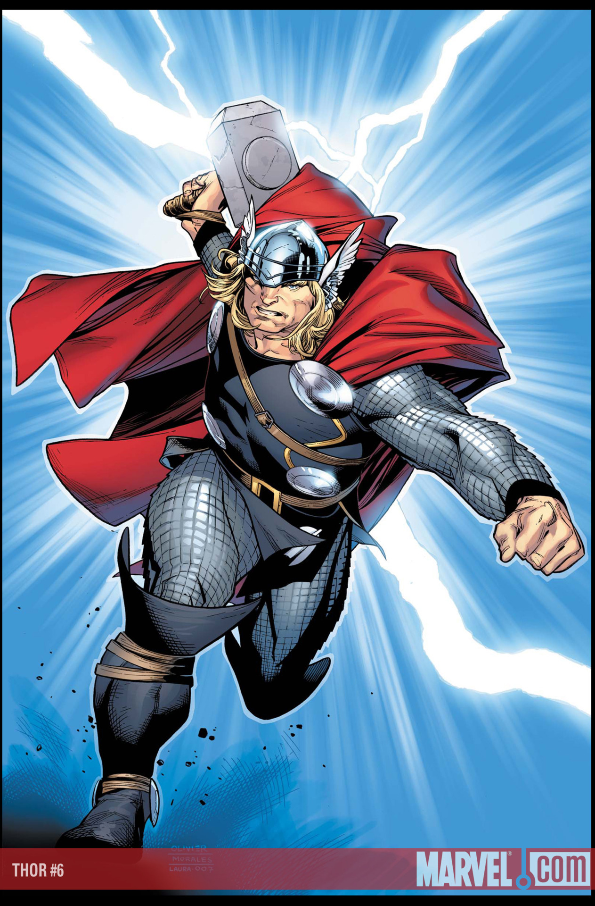

Thor Odinson
Creado por Stan Lee (guion), Jack Kirby (dibujo)
Originado en 1962, Journey into Mystery #83

Es el guerrero mas destacado
de Asgard y del mundo humano,
su padre es Odin y su hermano Loki.
Tambien es un miembro importante
de Los Vengadores.